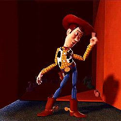

WELCOME TO THE MAGIC! KINGDON

Se você chgou até aqui, imagino que está procurando uma bela aventura não é mesmo marujo?!
Entaão venho aqui te dar algumas opções para se juntar a essa tripulação e entrar nessa embarcação

1º Piratas do Caribe - A Trilogia
Aqui temos um clássico onde engloba tudo que se possa imaginar...

Sinopse: O pirata Jack Sparrow tem seu navio saqueado e roubado pelo capitão Barbossa e sua tripulação.
Com o navio de Sparrow, Barbossa invade a cidade de Port Royal, levando consigo Elizabeth Swann, filha do governador.
Para recuperar sua embarcação, Sparrow recebe a ajuda de Will Turner, um grande amigo de Elizabeth.
Eles desbravam os mares em direção à misteriosa Ilha da Morte, tentando impedir que os piratas-esqueleto derramem o sangue de Elizabeth para desfazer a maldição que os assola.2º Alladin
Este aqui me recordo de pedir pro meu pai colocar o VHS (sim sou idoso) 300x até pegar no sono

Sinopse: Um jovem humilde descobre uma lâmpada mágica, com um gênio que pode lhe conceder desejos.
Agora o rapaz quer conquistar a moça por quem se apaixonou, mas o que ele não sabe é que a jovem é uma princesa que está prestes a se noivar.
Agora, com a ajuda do gênio, ele tenta se passar por um príncipe para conquistar o amor da moça e a confiança de seu pai.
3º Hércules
Perdi as contas de quantas vezes cantei junto com esse filme...

Sinopse: Hercules, filho dos deuses, foi capturado quando bebê por Hades e forçado a viver entre os mortais como metade homem e metade deus.
Agora um adolescente, Hércules precisa realizar um rito de passagem na Terra para provar-se digno de viver com os deuses do Monte Olimpo.
Com seu ajudante sátiro e corajoso Filoctetes, Hércules deve aprender a usar sua força para derrotar uma série de criaturas malignas.4º Lilo & Stich
Pensa em um Alien MARAVILHOSO.. Ohana quer dizer....

Sinopse: Lilo é uma garota que adora cuidar de animais menos favorecidos.
Lilo tem o costume de coletar lixo reciclável nas praias para, com o dinheiro recebido, comprar comida para peixes.
Até que, em um belo dia, ela encontra um cachorro e decide adotá-lo.
Entretanto, este cachorro na verdade é Stitch, um ser alienígena que é um dos criminosos mais perigosos da galáxia.
Agora, Stitch esconde quatro de suas seis pernas e decide se fazer passar por um cachorro comum, ficando amigo de Lilo.
5º Toy Story
Precisando de um amigo? Amigo estou aqui.... :)
Sinopse: O aniversário do garoto Andy está chegando e seus brinquedos ficam nervosos, temendo que ele ganhe novos brinquedos que possam substituí-los.
Liderados pelo caubói Woody, o brinquedo predileto de Andy, eles recebem Buzz Lightyear, o boneco de um patrulheiro espacial, que logo passa a receber mais atenção do garoto.
Com ciúmes, Woody tenta ensiná-lo uma lição, mas Buzz cai pela janela.
É o início da aventura do caubói, que precisa resgatar Buzz para limpar sua barra com os outros brinquedos.